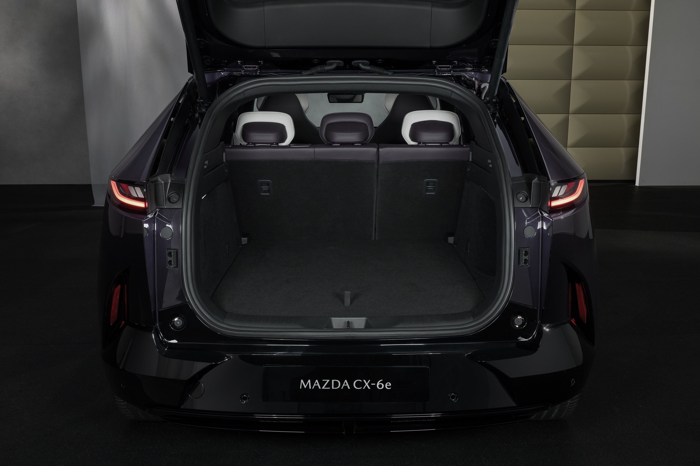
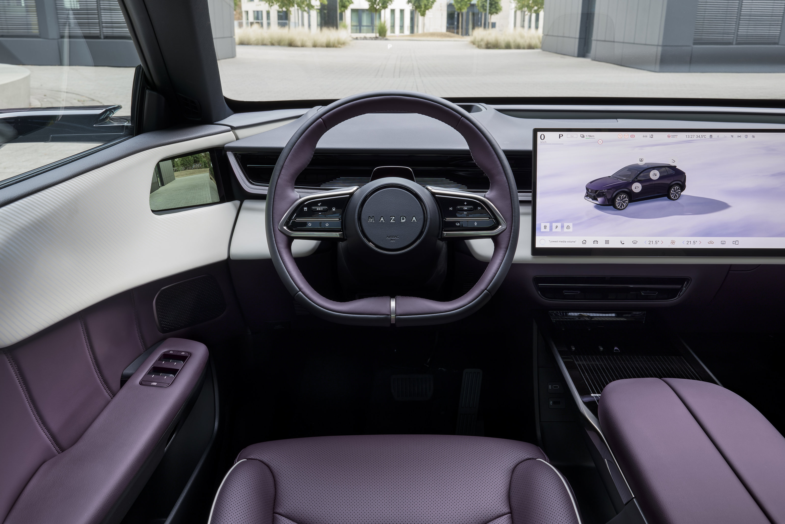
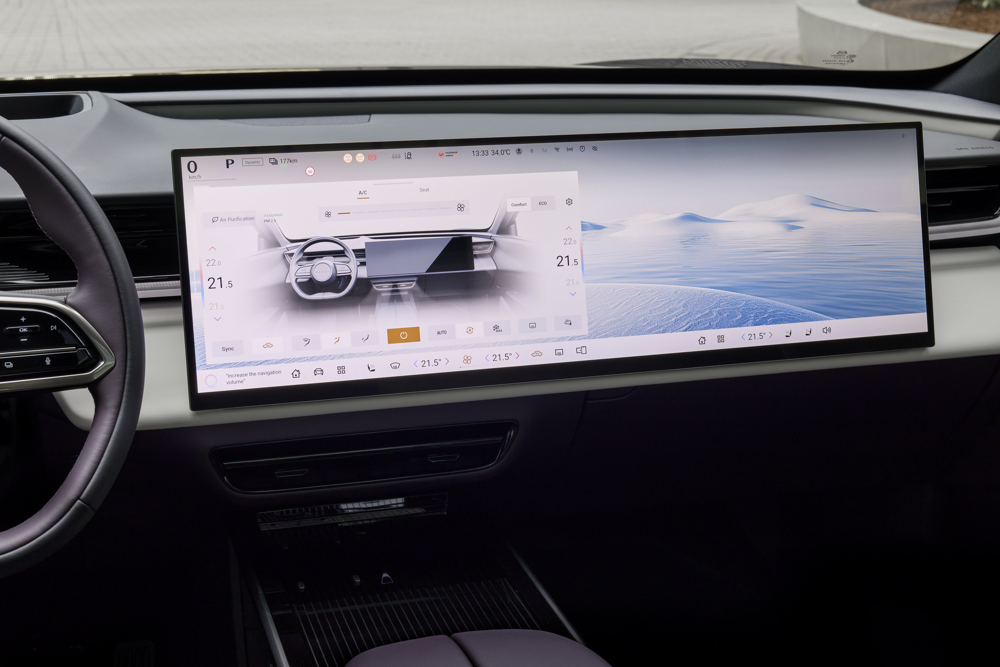

Mazda ha dado un paso importante en su estrategia de electrificación con el lanzamiento del CX-6e, un SUV eléctrico de tamaño medio que ya está disponible para reserva en España. Lo primero que quiero dejar claro antes de entrar en materia: en EM24 todavía no hemos podido conducir esta unidad, así que este artículo combina los datos oficiales publicados por Mazda con las impresiones de conducción de medios españoles que ya han tenido acceso al modelo. Cuando hable de sensaciones al volante, lo atribuiré siempre a la fuente correspondiente, no a una prueba propia.
Dicho esto, vamos con los datos que sí tenemos confirmados: una batería LFP de 78 kWh, hasta 484 km de autonomía homologada, tracción trasera, carga rápida en unos 24 minutos y una pantalla panorámica de 26 pulgadas que es, sin duda, uno de los elementos más comentados del coche.
1. Ficha técnica del Mazda CX-6e
| Característica | Mazda CX-6e |
|---|---|
| Batería | 78 kWh, química LFP |
| Autonomía homologada | Hasta 484 km WLTP |
| Motor | 190 kW (258 CV) |
| Par máximo | 290 Nm |
| Tracción | Trasera |
| Carga AC | Hasta 11 kW |
| Carga DC | Hasta 195-200 kW, según comunicación de Mazda |
| Recarga rápida | 10-80% en unos 24 minutos, según fabricante |
| Precio de tarifa anunciado | Desde 46.200€ |
| Precio promocional anunciado | Desde 41.990€, sin ayudas |
Fuentes: comunicados oficiales de Mazda sobre la preventa y las prestaciones del CX-6e.
2. El precio real: tarifa vs promoción
⚠️ Ojo con el precio anunciado:
Los 41.990€ que ha difundido Mazda corresponden a una promoción de lanzamiento, no a un precio permanente ni a un precio final con ayudas aplicadas. La tarifa de referencia comunicada oficialmente para el acabado de acceso Takumi es de 46.200€. Antes de tomar cualquier decisión de compra, te recomiendo comprobar la oferta vigente en el configurador oficial de Mazda, ya que las promociones de lanzamiento suelen tener condiciones y plazos limitados.
3. Diseño e interior
El CX-6e mantiene el lenguaje de diseño Kodo que caracteriza a Mazda, con un exterior cuidado que busca diferenciarse del resto de SUVs eléctricos del segmento. Pero si hay un elemento que acapara todas las miradas en el habitáculo, ese es la pantalla panorámica de 26 pulgadas, que integra buena parte de la información de conducción y del sistema multimedia en una sola superficie.

La pantalla panorámica de 26 pulgadas es uno de los elementos más llamativos —y también más comentados— del interior del CX-6e. Imagen: Mazda
Esta apuesta tecnológica tiene su contrapartida: al concentrar tantas funciones en una única pantalla, el sistema multimedia puede resultar menos intuitivo que los mandos físicos tradicionales, algo que, como veremos en el siguiente apartado, varios medios ya han señalado tras sus primeras pruebas de conducción.
4. Autonomía y carga
La batería LFP de 78 kWh del CX-6e ofrece una autonomía homologada de hasta 484 km WLTP. Como siempre recordamos en EM24, esta cifra es un dato de homologación obtenido en condiciones de ensayo normalizadas, pensado para comparar vehículos entre sí, no una garantía de autonomía real en cualquier circunstancia de uso. Factores como la velocidad en autopista, el frío o el uso de la climatización pueden hacer que la autonomía real difiera de la homologada, algo que explicamos con más detalle en nuestra guía para interpretar fichas técnicas de coches eléctricos.
En cuanto a la carga, el CX-6e admite hasta 11 kW en corriente alterna y hasta 195-200 kW en corriente continua, según los datos comunicados por Mazda. Esto permitiría, siempre según el fabricante, una recarga del 10% al 80% en unos 24 minutos en condiciones óptimas. Es un dato competitivo dentro de su segmento, aunque como ocurre con cualquier pico de potencia de carga, habría que comprobar en una prueba real cómo se comporta esa potencia a lo largo de toda la sesión, ya que suele reducirse a medida que la batería se acerca al 80%.
🔋 Resumen de autonomía y carga:
- • Autonomía homologada: hasta 484 km WLTP
- • Carga AC: hasta 11 kW
- • Carga DC: hasta 195-200 kW (según Mazda)
- • Recarga 10-80%: unos 24 minutos (dato del fabricante)
5. Conducción: qué dicen las pruebas
Aquí es donde más quiero insistir en la distinción: en EM24 todavía no hemos conducido el Mazda CX-6e, así que lo que te cuento en este apartado son las impresiones recogidas por medios españoles que sí han tenido acceso a una unidad de pruebas, concretamente Coches.com y Motor.es.

Vista del habitáculo del Mazda CX-6e desde los asientos delanteros. Imagen: Mazda
Según estas pruebas publicadas, el CX-6e se comporta como un SUV cómodo y espacioso, con una puesta a punto de la suspensión claramente orientada al confort más que a un carácter deportivo, algo que puede sorprender a quienes asocian a Mazda con una conducción más dinámica en sus modelos de combustión. También se señalan algunos aspectos mejorables en la interfaz multimedia y en la usabilidad de la pantalla panorámica, en línea con lo que comentábamos en el apartado de diseño.
📝 Nota editorial:
Las valoraciones sobre la conducción, el confort y la usabilidad que aparecen en este apartado corresponden a las pruebas publicadas por Coches.com y Motor.es, no a una prueba propia de Electromovilidad 24. En cuanto tengamos oportunidad de conducir el CX-6e, actualizaremos este artículo con nuestras propias impresiones.
6. Lo mejor y lo peor del Mazda CX-6e
A partir de la ficha técnica oficial y de las pruebas de conducción publicadas hasta ahora, estos son los puntos que destacaría a favor y en contra del Mazda CX-6e:
✅ A favor:
- • Autonomía homologada elevada (484 km WLTP) para su categoría
- • Batería LFP, generalmente asociada a mayor durabilidad y menor coste
- • Carga rápida competitiva, con un pico declarado de hasta 200 kW en DC
- • Diseño exterior cuidado, fiel al lenguaje Kodo de Mazda
- • Según las pruebas publicadas, un comportamiento cómodo y espacioso en el día a día
❌ En contra:
- • El precio promocional de 41.990€ no es el precio de tarifa real (46.200€)
- • La interfaz multimedia, muy dependiente de la pantalla de 26 pulgadas, genera dudas sobre su usabilidad según las pruebas consultadas
- • Una puesta a punto orientada al confort, que podría decepcionar a quien busque un carácter más deportivo típico de Mazda
- • Aún no existen pruebas de autonomía real ni de consumo en condiciones españolas que permitan contrastar la cifra WLTP
7. Precio frente a sus rivales
Con un precio de tarifa de 46.200€ (o 41.990€ durante la promoción de lanzamiento), el Mazda CX-6e se sitúa en el mismo segmento de precio que otros SUV eléctricos de tamaño medio muy conocidos en el mercado español, como el Tesla Model Y, el Kia EV6, el Hyundai Ioniq 5 o el Skoda Enyaq.
⚠️ Sobre esta comparativa:
No voy a darte cifras exactas de estos rivales en este artículo porque los precios de todos ellos cambian con frecuencia según promociones, acabados y campañas puntuales de cada marca. Lo que sí puedo decirte es que, por posicionamiento de marca y segmento, el CX-6e compite directamente con estos modelos en el tramo alto de los SUV eléctricos medios. Te recomiendo consultar los configuradores oficiales de cada marca para comparar precios actualizados antes de decidir.
Donde el CX-6e sí puede marcar una diferencia relevante frente a algunos de estos rivales es en la química de su batería (LFP) y en la cifra de autonomía homologada, que se sitúa en la parte alta de su segmento. Será interesante ver, cuando lleguen más pruebas independientes, si esa autonomía se traduce en un consumo real competitivo frente a sus principales competidores.
8. Fuentes consultadas para este análisis
Para elaborar este artículo he combinado comunicados oficiales de Mazda con pruebas de conducción publicadas por medios especializados españoles. Te dejo todas las referencias:
🔹 Mazda España — Preventa y precio del CX-6e
Comunicado oficial con el precio de tarifa, el precio promocional, la batería, la autonomía, la potencia y el equipamiento.
Consultar el comunicado oficial →🔹 Mazda — Prestaciones y tecnología del CX-6e
Datos técnicos oficiales de batería, autonomía, motor, carga rápida y equipamiento tecnológico.
Leer la información técnica →🔹 Coches.com — Prueba y opinión del Mazda CX-6e
Impresiones de conducción tras una semana de uso, valoración del confort, el interior y el comportamiento general del coche.
Leer la prueba →🔹 Motor.es — Prueba del Mazda CX-6e
Prueba de conducción con detalles sobre características, espacio interior, equipamiento y valoración general del modelo.
Leer el análisis de Motor.es →
Detalle de los acabados interiores del Mazda CX-6e. Imagen: Mazda
Preguntas frecuentes sobre el Mazda CX-6e
FAQ – Mazda CX-6e
🔹 ¿Cuánto cuesta el Mazda CX-6e en España?
Mazda ha anunciado un precio de tarifa de 46.200€ para el acabado de acceso Takumi, aunque también ha lanzado una promoción de lanzamiento desde 41.990€ sin ayudas. Es importante tener en cuenta que el precio promocional corresponde a una oferta de lanzamiento, no a un precio permanente, por lo que conviene comprobar la oferta vigente en el configurador oficial de Mazda antes de tomar una decisión de compra.
🔹 ¿Cuál es la autonomía real del Mazda CX-6e?
Mazda homologa el CX-6e con hasta 484 km de autonomía según el ciclo WLTP, gracias a su batería LFP de 78 kWh. Como ocurre con cualquier cifra WLTP, es un dato de homologación obtenido en condiciones de ensayo normalizadas, por lo que la autonomía real en uso diario puede variar según la velocidad, la temperatura exterior, el uso de la climatización y el estilo de conducción.
🔹 ¿Cuánto tarda en cargarse el Mazda CX-6e?
Según los datos comunicados por Mazda, el CX-6e admite una potencia de carga rápida en corriente continua de hasta 195-200 kW, lo que permite una recarga del 10% al 80% en unos 24 minutos en condiciones óptimas. En corriente alterna, la carga admite hasta 11 kW. Estos tiempos son los declarados por el fabricante; la potencia real durante la sesión puede variar según el estado de la batería y su temperatura.
🔹 ¿Qué dicen las pruebas sobre la conducción del Mazda CX-6e?
Las pruebas publicadas por medios como Coches.com y Motor.es describen un SUV cómodo, espacioso y con una puesta a punto orientada al confort, más que a un carácter deportivo. También señalan algunos aspectos mejorables en la interfaz multimedia y en la usabilidad de la pantalla panorámica de 26 pulgadas. Estas impresiones corresponden a pruebas de conducción realizadas por esos medios, no a una prueba propia de Electromovilidad 24.
Conclusión: un SUV eléctrico interesante, con matices que conviene revisar
El Mazda CX-6e llega con una propuesta atractiva sobre el papel: batería LFP de 78 kWh, autonomía homologada alta para su segmento, carga rápida competitiva y un diseño que no pasa desapercibido, tanto por fuera como por su pantalla panorámica de 26 pulgadas. Al mismo tiempo, conviene tener presentes los matices: el precio de 41.990€ es una promoción de lanzamiento y no el precio de tarifa real, y las primeras pruebas publicadas apuntan a una interfaz multimedia que no termina de convencer del todo y a una puesta a punto más orientada al confort que a la deportividad habitual de Mazda.
En EM24 seguiremos de cerca la evolución de este modelo y, en cuanto podamos acceder a una unidad de pruebas, actualizaremos este artículo con nuestras propias impresiones de conducción, consumo real y comportamiento en carretera española. Hasta entonces, esta review se basa en los datos oficiales de Mazda y en las pruebas ya publicadas por otros medios especializados, debidamente atribuidas.